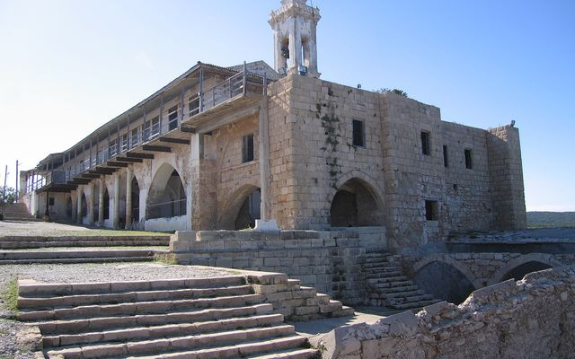

Ana sayfa › İl il gezilecek yerler › İskele
İskele'de Kültür Varlıkları rehberinde 5 yer var: 2 dini yapı, 1 müze, 1 kale & tarihi yapı, 1 doğal alan. Aşağıda öne çıkanları, haritayı ve tüm yerlerin listesini bulabilirsiniz.
⭐ Öne çıkanlar

1 · İskele · Müzeİskele İkon Müzesi
İskele İkon Müzesi, İskele kasabasındaki Panagia Theotokos Kilisesi'nde yer alır.

2 · İskele · Dini YapıApostolos Andreas Manastırı
Apostolos Andreas Manastırı, Karpaz Yarımadası'nın ucunda, denize bakan ıssız bir kıyıda yer alır.

3 · İskele · Kale & Tarihi YapıKantara Kalesi
Kantara Kalesi, Beşparmak Dağları'nın doğu ucunda, yaklaşık 630 metre yükseklikte, St.
🗺 Haritada
📍 Tüm yerler (5)
Dini Yapı (2)
Müze (1)
Kale & Tarihi Yapı (1)
Doğal Alan (1)

🏺 İlgili uygarlık rehberleri
👩🏫 Öğretmenler için
📄 Benim kentim: İskele🚌 Bu ile okul gezisi planlaEtkinlik kâğıtları ▸